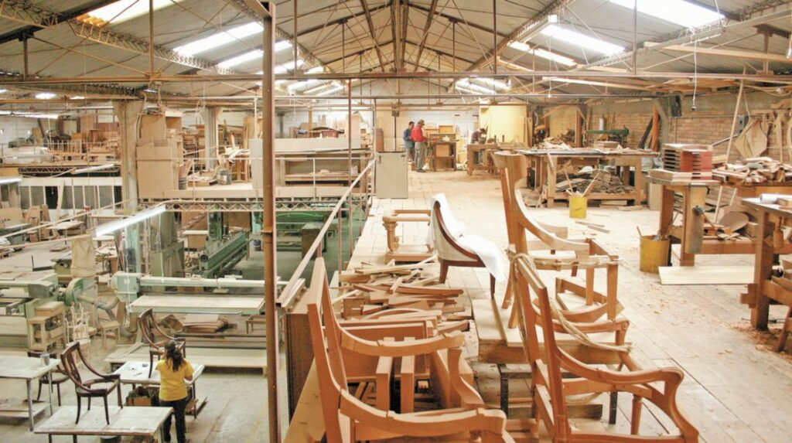

☆ ☆ ☆ HISTORIA ☆ ☆ ☆
"ORION", tiene una historia rica y fascinante que se remonta a más de cuatro décadas. Fundada en 1979 por don Manuel Rodríguez, un carpintero apasionado por el diseño y la funcionalidad, la mueblería nació como un pequeño taller donde se elaboraban muebles a medida para amigos y vecinos.
Inspirado por la tradición familiar y el deseo de aportar un toque personal a los hogares de su comunidad, decidió abrir su propio negocio. Con un modesto capital, adquirió herramientas de segunda mano y comenzó a crear piezas únicas que reflejaban la esencia de su trabajo manual y su visión estética
☆ ☆ ☆ CRECIMIENTO ☆ ☆ ☆
A medida que la demanda de sus muebles aumentaba, "ORION" se expandió rápidamente. En los años 90, don Manuel inauguró su primera tienda en el centro de la ciudad, donde ofrecía no solo muebles,
sino también asesoramiento personalizado para ayudar a cada cliente a encontrar lo que mejor se adaptara a su espacio y estilo de vida. La atención al detalle y la calidad de sus productos le ganaron una fiel clientela, y pronto "ORION" se convirtió en sinónimo de confianza y excelencia en la industria del mobiliario local.
La empresa sigue fiel a sus raíces, manteniendo un compromiso inquebrantable con la calidad artesanal y el trato humano.
Origen de la Empresa
Este es el primer taller que tuvo nuestro fundador, en el por si mismo descubrio su talento sobre la madera y la muebleria
13/04/1979
Personal
Al principio todo el trabajo lo llevaba a cabo una sola persona, pero con el avance de la tecnologia y el aumento de mano de obra logramos expandirnos

Presente
Nuestra empresa a logrado un crecimento exponencial, nuestros origenes nos llevaron a tener una solida base en el mercado
26/7/2024
☆ ☆ ☆ VISION & PROPOSITO ☆ ☆ ☆
El legado de don Manuel perdura en cada uno de los muebles que salen de su taller, y su filosofía de diseño sigue guiando a las nuevas generaciones del negocio. Así, la Mueblería "ORION" se ha establecido no solo como un punto de venta,
sino como un pilar en la comunidad, un lugar donde cada cliente puede encontrar no solo muebles, sino también la esencia de un hogar.
☆ ☆ ☆ ACCIONAR VERDE ☆ ☆ ☆
En un mundo cada vez más consciente de la importancia de la sostenibilidad, ORION se erige como una mueblería comprometida con el cuidado del medio ambiente. Desde su fundación, ORION ha implementado una serie de acciones verdes que no solo reflejan su filosofía empresarial, sino que también promueven un estilo de vida más ecológico entre sus clientes.
Una de las principales iniciativas es el uso exclusivo de madera proveniente de bosques certificados y gestionados de manera sostenible. Cada pieza de mobiliario, desde mesas hasta estanterías, está fabricada con madera que cumple con las normativas ambientales internacionales, lo que asegura que no se contribuye a la deforestación ni al deterioro de ecosistemas.